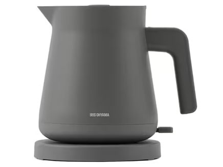
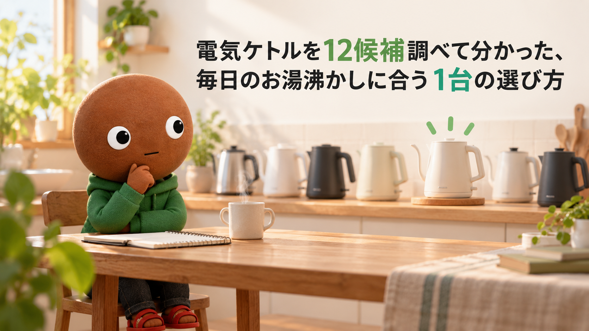
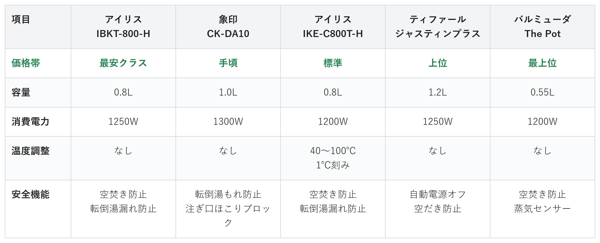

Amazonで見る朝のコーヒー1杯のために、やかんでお湯を沸かすのが地味に手間な人へ
そのお湯、
何で沸かしてる？
電気ケトル12候補を調査。温度調整・容量・安全機能から、選び方の違う5商品を比較しました。
自分に合う電気ケトルを探す
この記事はAmazonアソシエイト・プログラムの参加者として、紹介料を得る場合があります（PR）。仕様は調査時点の情報です。
12候補から、選び方の違う5商品に絞りました。まずは気になる1台へ。向いている人・向いていない人と、低評価レビューもまとめています。
12候補を調査
5商品に厳選
低評価レビューも確認済み
結論から先に言うと：
あなたの使い方に合う、1台を。
横にスワイプして、5商品を見比べる
選び方の基準は2つ
調べてわかったのは、基準はシンプルでした。
1つ目は「用途」。1〜2杯をさっと沸かしたいのか、お茶やコーヒーを温度からこだわりたいのかで、選ぶべき機能がまったく違います。
2つ目は「安全機能」。空焚き防止や転倒時の湯もれ防止は、小さな子どもがいる家庭ほど重視したい項目です。
価格帯にはかなり幅がありました。
比較表

価格帯・容量・消費電力・温度調整・安全機能の比較（価格帯は最安クラス〜最上位の5段階）
アイリスオーヤマ IBKT-800-H
- 最安クラス
- 容量：0.8L
- 消費電力：1250W
- 安全機能：コードレス出湯・空焚き防止・転倒湯漏れ防止・自動電源オフ
象印 CK-DA10
- 手頃
- 容量：1.0L
- 消費電力：1300W
- 安全機能：転倒湯もれ防止構造・注ぎ口ほこりブロック・ロック機能
アイリスオーヤマ IKE-C800T-H
- 標準
- 容量：0.8L
- 消費電力：1200W
- 温度調整：40〜100℃・1℃刻み
ティファール ジャスティンプラス
- 上位
- 容量：1.2L
- 消費電力：1250W
- 安全機能：自動電源オフ・空だき防止・パイロットランプ
バルミューダ The Pot
- 最上位
- 容量：0.55L
- 消費電力：1200W
- 安全機能：空焚き防止・自動電源オフ・蒸気センサー
向いてる人
- とにかく初期費用を抑えたい人
- 1〜2人暮らしで容量は十分な人
向いてない人
- お茶やコーヒーにこだわりたい人
選ぶ決め手とにかく安さを重視するなら、この1台です。
低評価レビューも見ました
スイッチの点灯表示がなく、通電中かどうか遠目で確認しづらいという指摘があります。給水口の開閉がやや面倒、外から水の量が見えないという声もありました。
参考：レビューブログを基にした集約
IBKT-800-Hは、
まず1台、電気ケトルを
試したい人に最も向く1台です。
容量は0.8L、コードレスで
注ぐことができ、
空焚き防止・転倒湯漏れ防止構造を備えています。
カップ1杯（140mL）は
約60秒で沸きます。
5商品の中でもっとも手頃な価格帯です。
向いてる人
- 実績のあるロングセラーを選びたい人
- 1.2Lで家族分を沸かしたい人
向いてない人
- 温度を細かく調整したい人
選ぶ決め手定番の安心感を重視するなら、この1台です。
低評価レビューも見ました
初回使用時にスイッチを押してもすぐ切れてしまったという個体不良の報告があります（販売店で返品交換に対応してもらえたとのこと）。上蓋が固定されており水を入れにくいという声もありました。
参考：レビューブログを基にした集約
ティファールのジャスティンプラスは、
電気ケトルの定番として
選んでおけば失敗しにくい1台です。
容量は1.2L、カップ1杯は59秒、
満水でも6分18秒で
沸くパワーがあります。
自動電源オフと空だき防止、
沸騰を知らせる
パイロットランプも搭載しています。
向いてる人
- コーヒーのハンドドリップをしたい人
- お茶を淹れる温度にこだわりたい人
向いてない人
- とにかく安さを優先したい人
選ぶ決め手お茶やコーヒーへのこだわりを重視するなら、この1台です。
低評価レビューも見ました
温度調整機能は便利という声が多い一方、消費電力が高く「電子レンジ並み」と感じたという指摘がありました。
参考：レビューブログを基にした集約
IKE-C800T-Hは、
お湯の温度から
飲み物の味を整えたい人に最も向く1台です。
40〜100℃まで1℃刻みで
温度調整でき、
沸騰・コーヒー・日本茶の自動メニューもあります。
注ぎ口はドリップ向けの細口で、
お湯の量を
コントロールしやすい形状です。
向いてる人
- キッチンに置く見た目も重視したい人
- コーヒーのハンドドリップもしたい人
向いてない人
- 大容量で一気に沸かしたい人
選ぶ決め手デザイン性を重視するなら、この1台です。
低評価レビューも見ました
本体底面から水漏れが起きたという初期不良の報告があります。旧モデルより容量が50mL減った点に慣れないという声、側面が熱くなるという指摘もありました。
参考：レビューブログを基にした集約
バルミューダのThe Potは、
毎日使う家電の見た目にも
こだわりたい人に最も向く1台です。
ステンレス製の丸みのあるデザインで、
注ぎやすいノズルは
ハンドドリップにも向いています。
安全機能は空焚き防止・自動電源オフ・
蒸気センサーの
3つを備えています。
向いてる人
- 注ぎ口のほこりや衛生面が気になる人
- 小さな子どもがいる家庭の人
向いてない人
- お茶やコーヒーの温度調整をしたい人
選ぶ決め手注ぎ口の衛生面を重視するなら、この1台です。
低評価レビューも見ました
フタが開け閉めしにくい、少しずつしかお湯が出てこないという声があります。二重構造のため本体がやや重く感じる、水量のメモリが分かりにくいという指摘もありました。
参考：レビューブログを基にした集約
象印のCK-DA10は、
注ぎ口の衛生面と
安全性を重視したい人に最も向く1台です。
使わない間、注ぎ口にほこりが
入りにくい
「注ぎ口ほこりブロック」を搭載しています。
転倒湯もれ防止構造と
ロック機能付きボタンもあり、
1300Wのハイパワーです。
12候補をどう絞った？ 調査の経緯を見る
朝のコーヒー1杯のために、やかんでお湯を沸かすのが地味に手間だったりしませんか。沸くまでの数分、ただ待つだけの時間がもったいなく感じます。電気ケトルなら1杯分は1分もかかりません。
なので今回、私が電気ケトルのスペックを調べ比較しました。各商品ごとに、向いてる人・向いてない人も調べているので、自分に合った電気ケトルを探してみてください。
12候補から5つに絞り込みました
電気ケトルは、価格.comの電気ポット・電気ケトル一覧だけでもたくさんの機種が並ぶジャンルです。今回は主要候補12件を調べ、価格帯・機能・レビュー実績が重複しないように5商品まで絞りました。
アイリスオーヤマ2機種・ティファール1機種・バルミューダ1機種・象印1機種・タイガー魔法瓶1機種・デロンギ1機種・ヒロコーポレーション1機種・新津興器1機種・玉橋1機種・ピーコック魔法瓶1機種・ドリテック1機種、という12候補です。
タイガー魔法瓶のPCK-A080は、約45秒で沸く蒸気レス構造が魅力です。ただ価格帯が象印CK-DA10と近く、安全機能の軸で重複するため見送りました。
デロンギのKBI1200Jは、デザイン性でバルミューダと軸が重複します。価格.comに実勢価格の登録がなく、出典の弱さでも見送りました。
ヒロコーポレーションKTK-10BKは、温度調節機能でIKE-C800T-Hと軸が重複するうえ、価格.comのレビューが1件のみで見送りました。
新津興器SWK-17と玉橋SUS-02は、どちらも価格.com上に満足度データや実勢価格がなく、実績の確認が難しいため見送りました。
ピーコック魔法瓶のWGK-08-Wは、注ぐたびに沸かす電気ケトルとは違い、沸かしたお湯を保温する「電気保温ポット」だったため、カテゴリ違いとして対象外にしました。
ドリテックのPO-372BKは、安さの軸でIBKT-800-Hと重複し、情報量でも劣るため見送りました。
低評価の2商品も見ました
上の12候補とは別に、サクラチェッカーが「要注意」と判定した商品を調べました。個別レビュー本文の真偽までは検証できないため、機械的に検出された事実だけを正直に書きます。
Aliliyの電気ケトルは、レビュー件数7件とカテゴリ平均933件を大きく下回っていました。「高い平均サクラ度を持つメーカー」という判定と、本社所在国が推定中国という指摘も受けていました。
VegetableブランドのGD-G17は、公式サイトが無く、本社所在国が推定中国という要注意判定を受けていました。相場より大幅に安いという、サクラ商品にありがちな値下げパターンも見られました。
調べてみて驚いたこと
12候補を調べる中で、電気ケトルと電気ポットがかなり混同されやすいと実感しました。価格.comのカテゴリには、注ぐたびに沸かす電気ケトルと、沸かしたお湯を保温する電気ポットが同じ枠に並んでいます。
ピーコック魔法瓶のWGK-08-Wは、価格だけ見ると魅力的でしたが、調べてみると保温タイプの電気保温ポットでした。温度調整機能ひとつとっても、象印CK-DA10のように非搭載のモデルと、アイリスIKE-C800T-Hのように1℃刻みで調整できるモデルの差が想像以上に大きいと分かりました。
迷ったらこれ
ここまで読んでもまだ迷ったら、空焚き防止と自動電源オフを備えたIBKT-800-Hが、価格の手頃さも含めて外しにくい1台としておすすめです。
Amazonで見る→よくある質問
Q. 電気ケトルと電気ポットの違いは何ですか。
A. 電気ケトルは沸かしたらすぐ電源が切れるタイプ、電気ポットはお湯を保温し続けられるタイプです。今回比較した5商品はすべて電気ケトルです。
Q. 温度調整機能は必要ですか。
A. お茶やコーヒーを淹れる温度にこだわりたい人には便利ですが、沸騰させるだけなら無くても困りません。今回はアイリスオーヤマIKE-C800T-Hのみ搭載しています。
Q. 空焚きしてしまったらどうなりますか。
A. 今回の5商品はすべて空焚き防止機能を搭載しており、水が入っていない状態で電源を入れても自動で停止する設計です。
Q. 子どもがいる家庭で気をつけることはありますか。
A. 転倒時の湯もれ防止構造や、注ぎ口のロック機能があるモデルを選ぶと安心感が高まります。象印CK-DA10は注ぎ口のほこりブロックも備えています。
Q. コーヒーのハンドドリップに向いているのはどれですか。
A. 注ぎ口が細く、お湯の量をコントロールしやすいバルミューダThe PotとアイリスオーヤマIKE-C800T-Hの2台が向いています。
こんな記事も書いてます
ミートボーの調査部屋で他の記事も見る（全48本）


出典
- 価格.com 電気ポット・電気ケトル 満足度ランキング：kakaku.com
- 価格.com 電気ポット・電気ケトル 格安ランキング：kakaku.com
- 価格.com アイリスオーヤマ IBKT-800-H：kakaku.com
- 価格.com ティファール ジャスティン プラス 1.2L KO3408JP：kakaku.com
- アイリスオーヤマ公式通販 IKE-C800T-H：irisplaza
- 価格.com バルミューダ The Pot KPT03JP：kakaku.com
- バルミューダ公式 The Pot スペックページ：balmuda.com
- 象印公式ダイレクト CK-DA10-AD：zojirushi-direct.com
- 価格.com 象印 CK-DA10：kakaku.com
- サクラチェッカー 検索結果（Aliliy 電気ケトル）：sakura-checker.jp
- サクラチェッカー 検索結果（Vegetable GD-G17）：sakura-checker.jp